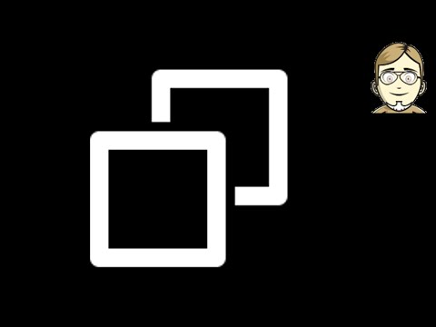

Mit dem Tool Robocopy lässt sich ein einfaches Backupkonzept unter Windows realisieren. Das kleine Kommandozeilentool ist in einer Standardinstallation von Windows vorhanden und spiegelt zuverlässig und schnell komplette Verzeichnisstrukturen - z.B. von einem USB-Stick auf den heimischen Rechner.
Hier ist noch einmal das kommentierte Skript, das ich in dem Video vorgestellt habe.
@ECHO OFF REM Quelle: http://www.heise.de/software/download/special/backup_mit_robocopy/17_1 REM Um das Quellverzeichnis mit sämtlichen Unterordnern ins Ziel zu spiegeln, REM genügt es schon, den Schalter /MIR (Mirror) zu aktivieren. REM Vorsicht: Nachdem Robocopy den Befehl ausgeführt hat, werden Quelle und REM Ziel mit identischen Ordnern und Dateien gefüllt sein. Das gilt auch dann, REM wenn Sie versehentlich ein falsches Zielverzeichnis auswählen - Robocopy REM wird den alten Inhalt gnadenlos entsorgen! Der Schalter /MIR fasst zwei REM Optionen zusammen: /E kopiert alle Unterverzeichnisse (auch leere); REM gleichzeitig löscht /PURGE im Zielorder alles, was in der Quelle nicht REM vorhanden ist. REM Für den Fall, dass der Zugriff auf Dateien schiefgeht, trifft robocopy REM die Voreinstellungen /R:10 und /W:30. Sobald Robocopy auf einen Fehler REM stößt, legt es damit eine Pause von 30 Sekunden ein und versucht es bis REM zu zehn Mal erneut. robocopy . "C:\Users\Marco Bakera\Desktop\Backup" /MIR /W:5 /R:1 pause REM /D:M-T-J Kopiert nur die an oder nach dem Datum geänderten Dateien. REM Ist kein Datum angegeben, werden nur Dateien kopiert, REM die neuer als die bestehenden Zieldateien sind. REM /S Kopiert Verzeichnisse und Unterverzeichnisse, die nicht leer sind. REM /E Kopiert alle Unterverzeichnisse (leer oder nicht leer). REM /Y Unterdrückt die Aufforderung zur Bestätigung, dass eine REM vorhandene Zieldatei überschrieben werden soll.